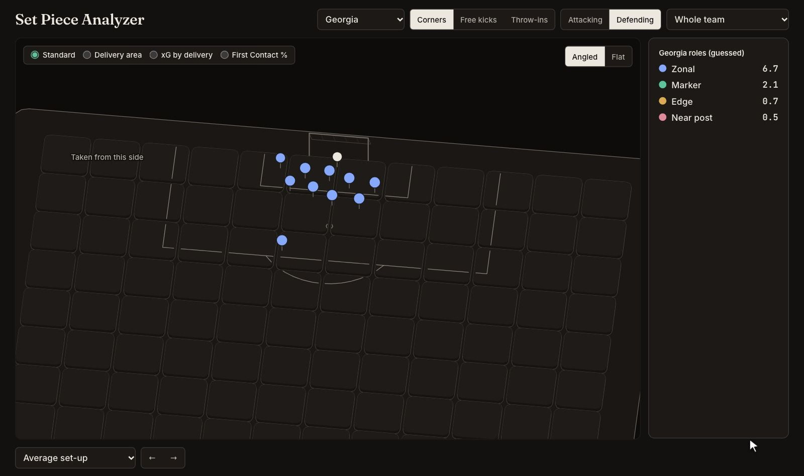
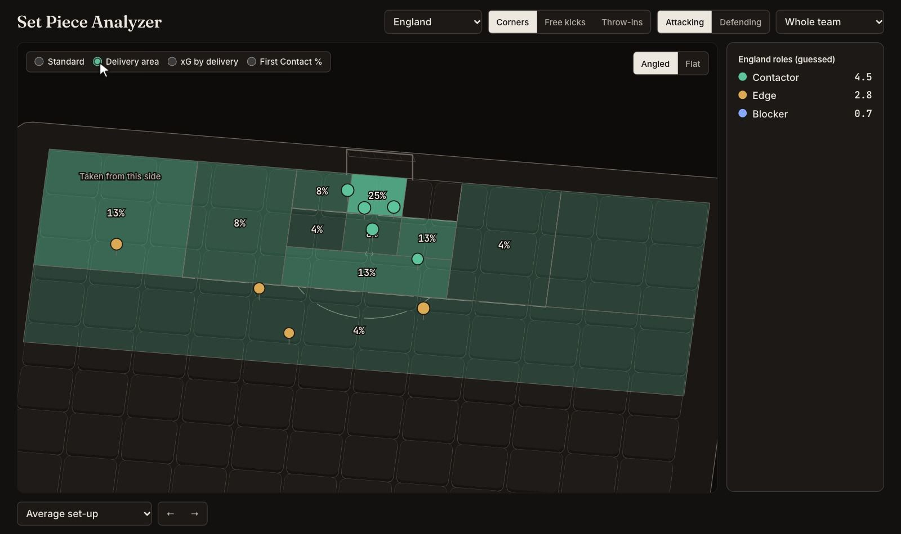
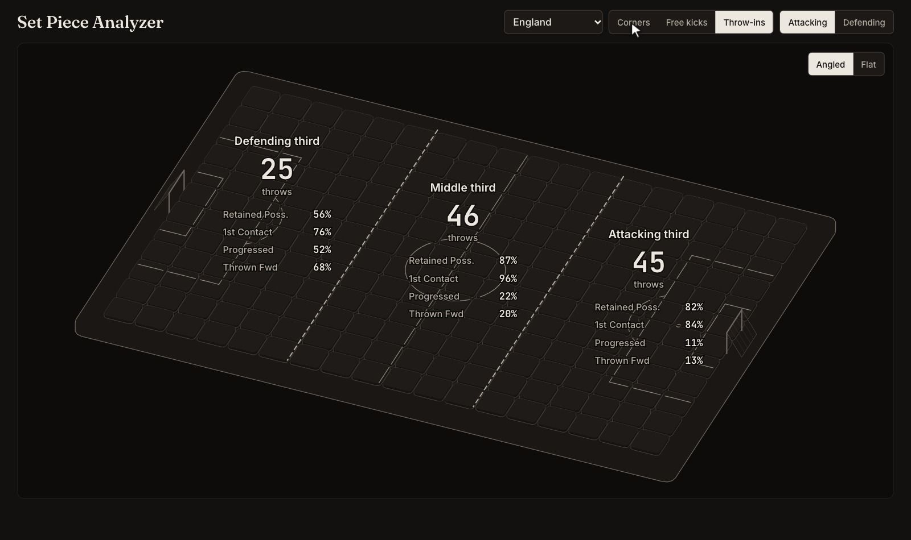
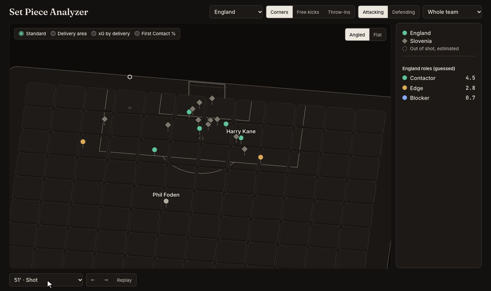

Overview
A set-piece tool for coaches. Pick a team and see how it sets up at corners, crossed free kicks and throw-ins, attacking and defending, then play any of them back from 360 data.
Set-ups and roles
Each team's average set-up comes from the 360 frame at the moment of delivery. Players are matched to slots across frames, and each slot takes a role from where it stands: contactors, blockers and edge players in attack; markers, zonals and post players in defence.

Delivery zones
An overlay shows where deliveries land, the xG they produce and the first contacts they win, on the zones used by the Impect set piece site.

Throw-ins by third
Throw-ins open on all three thirds with their key rates. Clicking a third opens its own average set-up, roles and delivery zones around the thrower.

360 playback
Any set piece with enough 360 frames plays back, with the selected team as circles coloured by role and the opposition as grey diamonds.

Technical notes
- Roles are guessed — 360 frames show positions but not player identities, so roles come from where players stand at delivery.
- Naming players — a player can only be named by touching the ball, because each frame's event names its player. Following players between frames carries that name back to where they started, so player views show runs that ended in a first contact or shot.
- Players out of shot — a player who appears later is placed from their next sighting, outside the camera's view at that moment, and drawn as an estimate.
- Averaging throw-ins — each frame is slid along the touchline so shapes are averaged relative to the thrower, within each third.
- Built with — Python for the data; plain JavaScript and SVG on the core of Hairline for the pitch. Heights from Transfermarkt and Wikidata.

Data: StatsBomb open data, UEFA Euro 2024.